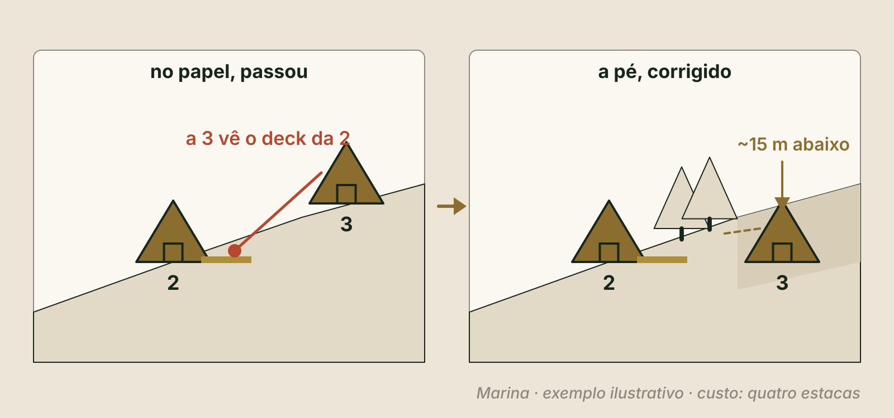

O terreno inteiro no papel, no tempo, antes de chamar quem desenha.
Antes de desenhar
O papel suporta qualquer projeto.
A pergunta do Pilar 5
O terreno suporta o que está no papel?
E a pergunta que decide
O que entra na fase um?
Esta aula em três respostas
O que, por quê e o que você leva
1
O que
Onde nunca construir, o que precisa existir, onde fica cada coisa, o que cabe, o que se vende e o que entra na fase um.
2
Por quê
A planta se corrige em semanas. A posição, nunca. E sem a lista do que vai ser construído, ninguém consegue orçar.
3
Resultado
A página 5 do seu Dossiê: o Masterplan faseado, com alertas, veredito e critério para parar.
Revisite · sem voltar às páginas
Três perguntas do Pilar 4
Qual é o cem por cento de três cabanas?
Clique para virar
Resposta
3 × 365 = 1.095 noites no ano.
Em que cenário você confia?
Clique para virar
Resposta
No mais fraco.
A obra custa tudo. O que a venda paga?
Clique para virar
Resposta
Só a área vendável. Hoje você vai separar as duas no seu desenho.
Bloco 1
Onde nunca construir e o que precisa existir
CuriosidadeNo desenho completo da Marina, as cinco cabanas e o apoio ocupam cerca de 2% da área que ela pode usar.
ReflexãoSe o arquiteto recebesse hoje só o seu terreno e uma foto, o que ele decidiria por você?
DicaTenha à mão o mapa do terreno e uma caneta vermelha. Hoje você marca antes de desenhar.
A cena que se repete
O desenho chegou antes das decisões
"Me manda o terreno que eu faço um estudo." Uma semana depois, um desenho lindo.
As cabanas perto da entrada. A caixa d'água no ponto plano, de onde se vê o vale.
E onde fica a rouparia? Por onde passa a limpeza? Onde a van para?
A crença: "eu não entendo de projeto, o arquiteto resolve"
Ele resolve o que recebe
Antes do projeto · papel
Depois do projeto detalhado · refazer, e pagar de novo
Depois da obra · outra obra
Depois de abrir · quase não se corrige
A planta de uma unidade se corrige em duas semanas. A posição dela se corrige nunca.
Os quatro erros de quem constrói sem plano
Clique em cada um: como ele aparece?
Não prever expansão
Virar
Aparece
A quarta cabana não tem lugar, ou estraga a vista das três primeiras.
Misturar hóspede e serviço
Virar
Aparece
O carrinho de lençol passa na frente do deck ao entardecer.
Ignorar sol e vento
Virar
Aparece
O deck com vista e vento fica vazio.
Planejar só a inauguração
Virar
Aparece
O resto cresce em puxadinhos.
E o custo invisível: infraestrutura no melhor ponto de vista é o desperdício mais caro que existe.
Antes da resposta · o que você acha?
Você esqueceu a rouparia na lista. Incluir depois da obra custa...
Segundo o Volume 03 do método, cerca de dez vezes mais. Depois da obra não é só a sala: é ponto de água, esgoto, energia e um caminho novo no meio do que já existe. A lista escrita custa uma semana.
Masterplan quer dizer plano mestre
O terreno inteiro, no tempo
O que nunca será construído
A fase um, o que abre primeiro
A reserva da fase dois
O apoio
A rede de água, energia e esgoto
Nesta etapa, orientativo: um rascunho à mão, sem escala, com as decisões e os motivos escritos. O desenho fino é do arquiteto. As regras são suas.
Ele nasce do modelo do Pilar 4
Cada modelo faz uma pergunta diferente ao terreno
Modelo
O que se vende
O que o masterplan precisa mostrar
Venda de unidades
A unidade
Quantas cabem e a área de cada uma
Multipropriedade
A fração de tempo
Quantas cabem: as frações saem delas
Renda, o da Marina
A diária
Quantas vendem noites, e o apoio para operar
Ninguém orça um terreno. Orça-se a lista que sai do masterplan.
Do "nunca" à fase um
Os seis passos, e o porquê de cada um
Clique em cada passo: a pergunta e por que ela vem nessa ordem.
Passo 1 · O método começa pelo contrário
Antes de decidir onde construir, decidimos onde jamais construiremos.
Lei
A área de preservação, como a margem do rio e a volta da nascente, e a reserva legal, a parte do imóvel rural com mata nativa. Quem confirma é o técnico ambiental, com o CAR.
Produto
O que a lei não pede, mas é o que você vende: o bosque que segura o vento, a vista, a crista. Derrubado, não volta.
Preserve além da lei, nunca aquém. E o melhor ponto de vista fica só para as unidades.
Uma mancha em branco no desenho não segura uma máquina
O "nunca" só existe com três gestos
1
Marcar
"Nunca será construído" sobre cada zona
Clique para o porquê
Por quê
Para ninguém usar o espaço vazio na correria da obra: guardar material, manobrar caminhão, fazer o atalho.
2
Fotografar
O terreno inteiro, com data e localização
Clique para o porquê
Por quê
É o registro mais barato, e o único que não se refaz depois da primeira máquina.
3
Pôr em contrato
Uma cláusula que toda empreiteira assina
Clique para o porquê
Por quê
Desenho não segura retroescavadeira. Quem redige a cláusula é o advogado: você decide o que ela protege.
Exemplo ilustrativo
O "nunca" da Marina
Zona
Motivo
A área de preservação do riacho e da nascente · 12.000 m²
Lei
A reserva legal · 10.000 m²
Lei
O bosque acima da meia encosta, que segura o vento da tarde
Produto
O bosque do caminho, que faz a chegada desacelerar
Produto
A crista: só um deck leve para o fim de tarde
Produto
Marcado, fotografado com data, cláusula levada ao advogado. A área livre também é produto.
Ao vivo · equalize o terreno
Exemplo ilustrativo · em m², sem escala
Quanto do terreno o desenho ocupa
Nunca medidoOutras áreas fora do usoUsável livreChão do desenho
Um ambiente por linha: para que serve, quem usa, quando, o tamanho e de que precisa estar perto ou longe.
Ninguém se apaixona por uma rouparia
Aqui a manhã é sua: você acorda com o vale e ninguém atravessa a sua vista.
A promessa da Marina vira regra de desenho: tudo o que a pessoa local faz precisa de lugar, de caminho e de horário fora da vista do hóspede.
Exemplo ilustrativo · resolvido passo a passo
A regra do apoio: de 15% a 25% da área fechada
Hospedagem · 3 cabanas × 38 m² fechados (o deck fica fora)114 m²
Apoio · rouparia 12 + depósito seco 6 + lixo 4 + copa e vestiário 830 m²
Área fechada total · 114 + 30144 m²
O apoio pesa · 30 ÷ 14420,8% · dentro da faixa
Área fechada: o interior com parede e telhado, das unidades e do apoio. Ponto de partida do Volume 03.
Ao vivo · equalize o apoio
Exemplo ilustrativo
E quando forem cinco cabanas?
Fase um · área fechada
Apoio na fase um
abaixo de 15%
15% a 25%
acima de 25%
Projeto completo · área fechada
Apoio no projeto completo
Ajustado ao vivo
A lista do que quase sempre falta · clique em cada um
Deixar de fora pode. Esquecer, não.
Rouparia e lavanderia
Para que serve
Serve para
Lençol limpo e sujo separados, e lavar, ou decidir terceirizar.
Depósito seco
Para que serve
Serve para
Guardar o que não pode molhar.
Lixo com acesso por fora
Para que serve
Serve para
O lixo sai sem passar pelo caminho do hóspede.
Copa e vestiário da equipe
Para que serve
Serve para
Onde a equipe come, troca de roupa e descansa.
Estacionamento de serviço
Para que serve
Serve para
Onde param a van, o fornecedor e quem trabalha.
Oficina e ferramentas
Para que serve
Serve para
Onde fica o que a manutenção usa.
Abrigo de gás e reservatório
Para que serve
Serve para
Onde ficam o gás e a caixa d'água. Quem diz onde e como é o profissional habilitado.
Para cada item: tem lugar no programa, ou ficou de fora por decisão escrita, com o motivo.
Exemplo ilustrativo · horários hipotéticos
Um dia de troca de hóspede, hora a hora
Clique em cada hora: o que acontece e o que isso exige.
Quiz relâmpago
Três cabanas de 38 m² fechados e 30 m² de apoio. Quanto o apoio pesa na área fechada?
30 ÷ (114 + 30) = 30 ÷ 144 = 20,8%, dentro da faixa de 15% a 25%. A base é a área fechada inteira, com o apoio dentro.
Antes do bloco 2 · 5 minutos
O seu "nunca" e o seu programa
1Pinte de vermelho o que nunca será construído, com o motivo: lei ou produto.
2Faça as quatro listas do programa: hospedagem, convivência, apoio e infraestrutura.
3A conta do apoio: apoio ÷ (hospedagem + apoio). Está entre 15% e 25%?
4Simule o seu dia de troca. O que faltou?
5:00
Onde não souber, escreva "não sei" e quem vai responder.
Bloco 2
Onde fica, o que cabe, o que se vende e a fase um
CuriosidadeNa Marina, a correção de posição mais importante custou quatro estacas.
ReflexãoSe a prefeitura deixa construir muito mais do que você vai construir, quem manda no seu número de unidades?
DicaVá ao terreno às sete da manhã e às cinco da tarde. O papel não mostra o que o chão mostra.
Passo 3 · Implantação
Hóspede e serviço em duas cores
A lápis, sobre o "nunca": cabanas, estacionamento e apoio.
Numa cor, o caminho do hóspede: do carro à cabana, e à convivência.
Na outra, o serviço: do apoio à porta de trás, a van e o lixo.
Circule cada ponto em que as cores se cruzam ou se veem.
Exemplo ilustrativo · distâncias aproximadas
A ordem que contraria o instinto
Ordem
O quê
Onde, na Marina
1
O que não recebe nada
O "nunca" do passo 1
2
Os melhores pontos de vista
A meia encosta virada para o nascente do sol, só para cabanas
3
O caminho do hóspede
Estacionamento na clareira e cerca de 120 m pela mata
4
As unidades
Três cabanas, cama virada para o nascente, cerca de 40 m entre elas
5
A convivência
O deck da crista, a uns 200 m: próximo, não colado
6
O apoio
Junto ao acesso, com entrada própria
7
A infraestrutura pesada
Reservatório e esgoto abaixo do acesso, fora da vista
No papel, tudo parece caber. O chão é que confirma.
A caminhada com estacas
Quatro estacas e barbante: o contorno de cada cabana, no tamanho real.
Às sete da manhã e às cinco da tarde, em pé onde seriam a cama e a janela.
Daqui eu vejo outra cabana? O carro? Ouço o serviço? O sol entra onde eu quero?
Foto de cada ponto, com data. Incomodou? Mova as estacas e repita.

Na Marina, a cabana 3 via o deck da 2. Desceu uns 15 m. Custo: quatro estacas.
Passo 4 · O estudo de massas: caixas de papelão sobre a planta
O que a prefeitura permite
Índice do plano diretor
Em palavras simples
Taxa de ocupação
A parte do chão que pode ter telhado
Coeficiente de aproveitamento
A soma de todos os andares
Taxa de permeabilidade
A parte que não pode ser cimentada
Recuos e altura máxima
O espaço livre em volta, e o teto
Você não calcula. Pede à prefeitura, por escrito, e entrega ao arquiteto.
Exemplo ilustrativo e exemplo do guia
O índice é um teto. O chão nem sempre cabe.
Marina · uma regra imaginada de 10% sobre 50.000 m²teto de 5.000 m²
O desenho completo dela ocupa304 m²
Guia · 15 m de frente, recuos de 3 m em cada lado · 15 − 3 − 39 m para construir
A mesma frente, regra de 7,2 m em cada lado · 15 − 14,40,6 m: não cabe
Na Marina, quem manda não é o índice. É o mercado, que no Pilar 2 disse: cabem três agora, e cinco no desenho.
Passo 5 · As duas áreas de qualquer empreendimento
Só a vendável gera receita. A não vendável também custa.
O estacionamento, o caminho pela mata e o deck da crista da Marina são área...
Ninguém paga por eles separado: entram no orçamento, não na receita. A não vendável precisa ser a menor que entregue a promessa, e nunca menor que isso.
Exemplo ilustrativo · resolvido passo a passo
De cada 100 m² construídos, quantos geram receita?
Fase um · 114 m² vendáveis em 144 m² fechadoscerca de 79%
Projeto completo · 190 m² em 224 m²cerca de 85%
A outra face da regra do apoio · 100% − 20,8%79,2%
Eficiência de 79% quer dizer que o negócio fecha?
Em chalés espalhados, quase todo o não vendável é chão, e o percentual sai alto. A régua de 60% do guia da Sienge é para prédios. E eficiência alta demais pode ser apoio de menos.
Passo 6 · A fase um
Construa menos unidades, nunca menos infraestrutura.
Água, energia, esgoto e acesso dimensionados para as cinco, já na fase um.
O duto vazio: um tubo enterrado, para passar cabo depois sem abrir o chão.
Senão, na fase dois, você reabre vala com hóspede dormindo ao lado.
Exemplo ilustrativo · escopo congelado da fase um da Marina
Três listas, somadas, assinadas e datadas
Entra
O que vai ser construído na fase um
Clique para a lista da Marina
Na Marina
3 cabanas de 38 m² + 16 m² de deck, com banheira e lareira; apoio de 30 m², ampliação preparada; rede para cinco, com duto vazio; estacionamento, vaga de serviço, caminho e deck leve da crista.
Espera
Tem lugar no desenho, mas só entra com o gatilho
Clique para a lista da Marina
Na Marina
Cabanas 4 e 5, só com o gatilho; o cabo da iluminação do caminho (o duto entra); paisagismo de enfeite; ideias que surgirem na obra.
Nunca
O que não entra, de propósito, com o motivo
Clique para a lista da Marina
Na Marina
Piscina e restaurante; recepção construída; automação; eventos com som e grupos.
A reserva da fase dois: estacas e placa, e o canteiro decidido em outro lugar.
Quando começa a fase dois? Não depois de um feriado cheio.
O gatilho: três condições que acendem juntas
Clique em cada condição: o que quer dizer e por quê.
Ao vivo · o masterplan inteiro em uma tela
Exemplo ilustrativo · em m²
Chão do desenho completo
Sobre a área usável
Teto da taxa de ocupação
Apoio · fase um e completo ·
Vendável na fase um
Rede
Reserva da fase dois unid.
Ajustado ao vivo
Exemplo ilustrativo · a página 5 do Dossiê da Marina
O Masterplan faseado da Marina
Item
O que saiu
O "nunca"
Preservação 12.000 m² e reserva legal 10.000 m² (lei); dois bosques e a crista (produto); três gestos feitos
Fase um e apoio
3 cabanas de 38 m² + 16 m² de deck; apoio de 30 m², 20,8% de 144 m²
Sem decisão
Oficina e ferramentas; abrigo de gás
Dia, caminhos e estacas
Faltava a vaga de serviço, que entrou; caminhos não se cruzam; a cabana 3 desceu uns 15 m
O que cabe e o vendável
304 m² contra o teto imaginado de 5.000 m²; 114 de 144 m² e 190 de 224 m²
Rede e gatilho
Rede para 5 já na fase um; três condições escritas, números pendentes para o Pilar 6
Alerta primeiro, resto depois, decisão por último
Os quatro vereditos desta página
Clique em cada veredito: quando ele vale e o que vem depois.
Critério para parar da Marina: "Se a consulta prévia, os índices ou o mapa ambiental tirarem as cabanas da meia encosta virada para o nascente, eu pauso e volto ao produto."
Revisão · responda de cabeça
Um feriado lotou as três cabanas. É hora da fase dois?
Um feriado é um dado, não doze meses. E ainda faltariam o caixa e a maturidade.
A prefeitura permite 5.000 m² e você vai ocupar 304 m². O índice é...
Na Marina, quem manda é o mercado e a promessa do silêncio.
Faça agora · a página 5 do seu Dossiê
O seu Masterplan faseado
1Responda. Uma pergunta por tela: o "nunca" e os três gestos, as unidades, o apoio, o dia simulado, os caminhos, as estacas, a rede e o gatilho. Onde não souber, "não sei" vira tarefa da semana.
2Leia na ordem: os alertas, o veredito e o critério para parar.
3Baixe o seu PDF e guarde na pasta "Meu Dossiê".
10:00
Na área de membros: aula "Faça agora · O seu Masterplan faseado"
O Pilar 5 em uma tela
O que ficou
Masterplan é o terreno inteiro no tempo. Nesta etapa, orientativo. Sem ele, não existe orçamento.
Antes de onde construir, onde jamais construir: lei ou produto, com três gestos.
O programa tem quatro áreas. O apoio fica entre 15% e 25% da área fechada.
Hóspede e serviço em duas cores. A posição se confere a pé, com estacas.
O índice é teto, e o chão nem sempre cabe. Só a área vendável gera receita.
Menos unidades, nunca menos infraestrutura. A fase dois espera o gatilho.
Próximo · Pilar 6
Pré-viabilidade
Quanto custa o projeto inteiro, quanto entra, quanto sobra e em quanto tempo volta. Pôr o terreno inteiro no papel antes de chamar quem desenha é o que um sócio, um banco ou a Zion conseguem avaliar. E a Zion avalia cada caso.
Conteúdo educacional. A Marina é um exemplo ilustrativo e o masterplan desta aula é orientativo. Não é projeto, laudo nem parecer, não é oferta de investimento e não é promessa de renda, retorno, ocupação, crédito, aprovação de licença ou sociedade. Preservação, índices e redes, quem confirma é o profissional habilitado, a concessionária e a prefeitura.